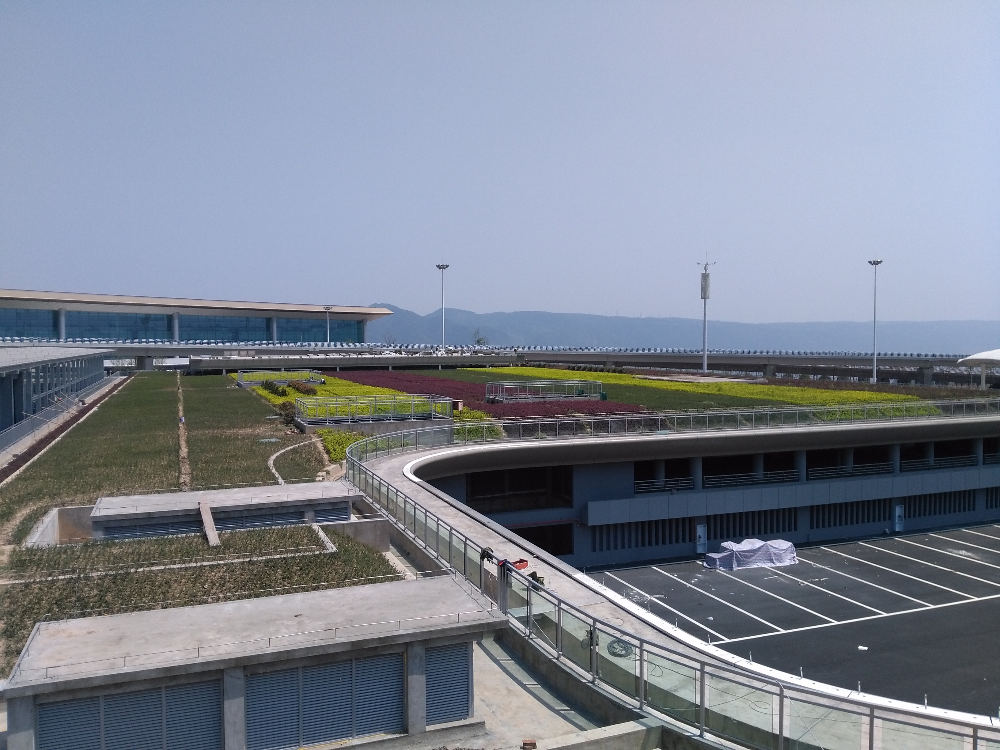
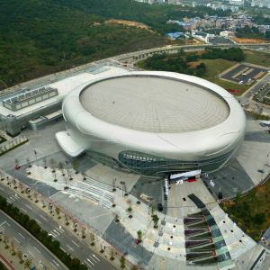

关于我们

公司技术、销售及项目管理等核心部门，均由具备十年以上国际知名建材生产商从业经验的高级经理负责管理；同时，公司组建了一支技术过硬、务实肯干的专业业务团队，致力于为客户提供覆盖售前咨询、技术方案优化、物料集成供应、现场技术支持及售后保障的全流程专业服务。
公司始终以客户需求为导向，专注于提供一流品牌的产品与服务，可满足客户对FM、LEED、UL等特殊领域的认证需求。凭借优质环保的材料、专业高效的施工及卓越周到的服务，公司为客户量身打造兼具美观性与可靠性的高品质建筑，在助力客户提升企业形象的同时，为其中长期固定资产投资创造更高价值回报。